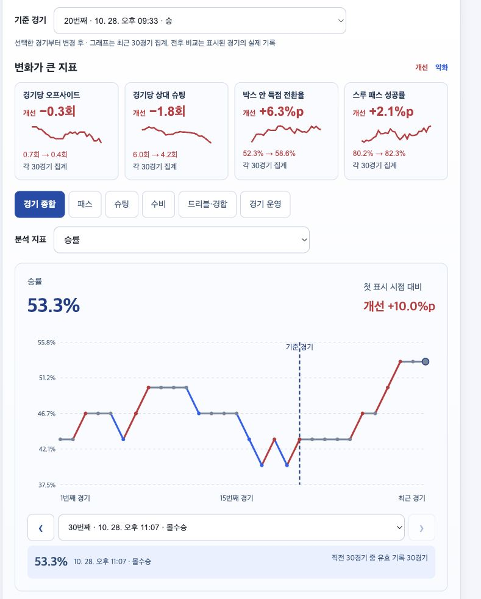
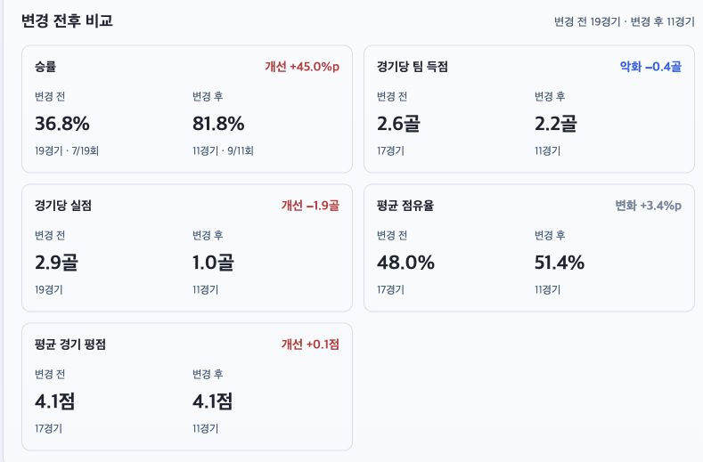
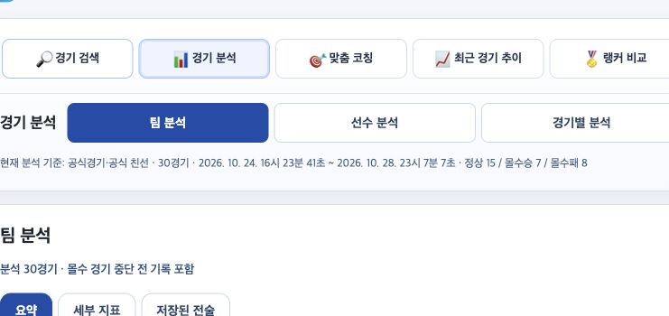

두심 달고 11경기, 승률 +45%p·실점 −1.9골… 제 기록 공개합니다
요즘 두심을 다른 금색 특성 대신 달 만한지 이야기가 많아서, 제 경기 기록을 직접 비교해봤습니다.
제가 개발하는 FC온라인 경기 분석 서비스 FCOACH에 기준 경기 전후 비교를 추가했습니다.
바로 사용하기: https://fcoach.fun
닉네임 입력 → 경기 분석 시작. 공식경기·공식 친선 최근 30경기를 자동으로 불러옵니다.

10/28 첫 경기에 기준선을 놓은 최근 경기 추이제 계정 ‘맹장축구’는 10/25까지 19경기는 두심을 추가하지 않고, 10/28의 11경기는 두심을 추가해서 플레이했습니다.
10/28 첫 경기를 기준 경기로 선택해 나눠봤습니다.

변경 전 19경기와 변경 후 11경기 비교• 승률: 36.8% → 81.8% (+45.0%p)
• 경기당 실점: 2.9골 → 1.0골 (−1.9골)
두심만의 효과라고 단정하는 결과는 아닙니다. 상대와 컨디션 등도 달랐을 수 있는 개인 기록입니다.
다만 ‘느낌상 좋아졌다’에서 끝내지 않고, 특성이나 전술을 바꾼 시점을 기준으로 숫자가 어떻게 달라졌는지 볼 수 있습니다.

최근 30경기의 영역별 점수와 랭커 평균최근 30경기 지표 점수는 패스 77점·수비 86점이었습니다.
패스 쪽을 더 보완해야겠다는 점을 한눈에 보고, 영역을 누르면 랭커 평균과 세부 기록도 확인할 수 있습니다.
이번 업데이트에서는 아래도 바꿨습니다.
• 실제 랭커 평균을 바탕으로 영역별 점수·강점·보완점·맞춤 코칭
• 벤제마 vs 음바페처럼 우리 팀 두 선수 기록 비교
• 선수·슈팅 유형별 슈팅 지도, 피드 미니페이스온과 특성 표시
• 모바일 화면 정리, 몰수 경기 중단 전 기록 반영
사용 방법은 ‘최근 경기 추이 → 기준 경기 선택’입니다. 선택한 경기부터 변경 후로 집계합니다.
공개 피드를 연결하면 저장한 전술·특성·훈련코치도 함께 볼 수 있습니다.
정확히 언제부터 두심을 달았는지 애매하다면 기준 경기를 앞뒤로 옮겨 결과가 일관적인지 확인해보세요. 기준을 어디에 두느냐에 따라 전후 비교 결과도 달라질 수 있습니다.
두심 장착 여부를 자동으로 판별하는 기능은 아닙니다. 본인이 설정을 바꾼 시점을 골라 비교하는 기능입니다.
직접 써보시고 불편하거나 더 보고 싶은 지표가 있으면 알려주세요.
https://fcoach.fun